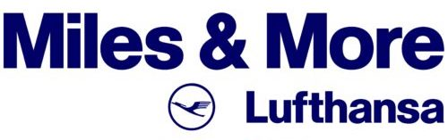
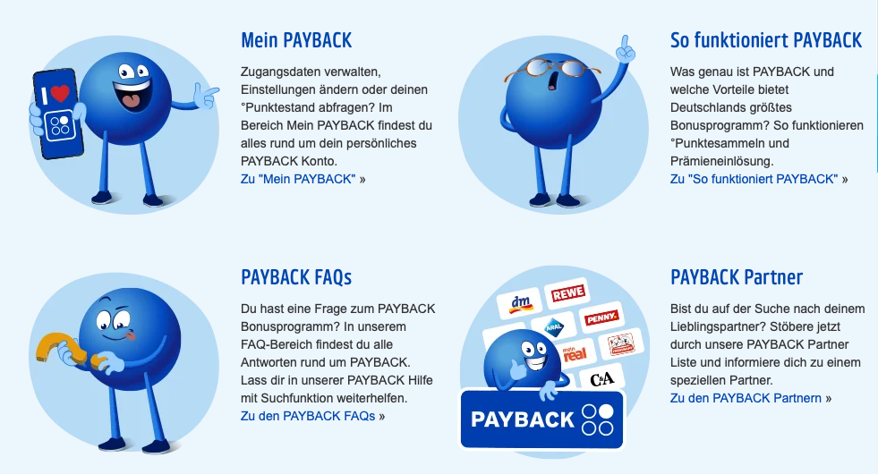
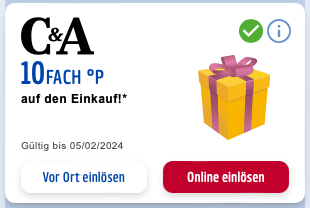
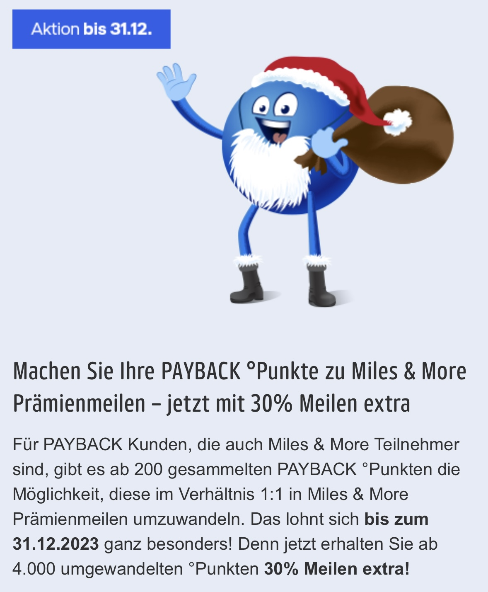
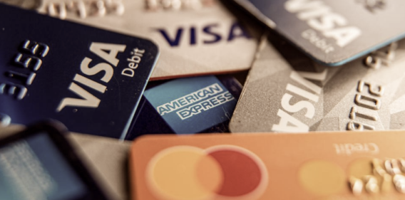
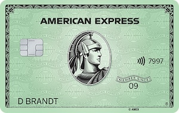
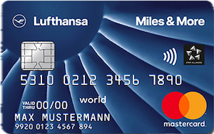
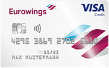
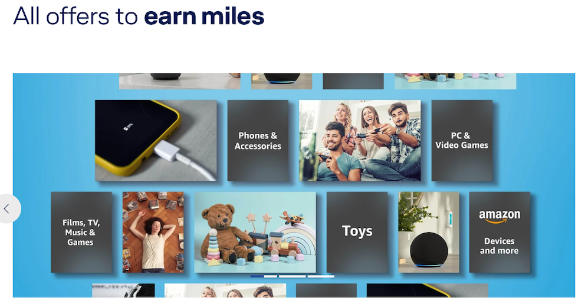
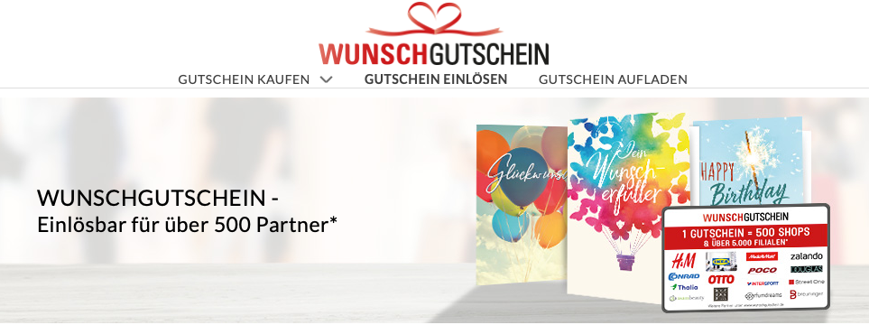

Na Alemanha, o principal e praticamente exclusivo programa de fidelidade é o Miles & More do Lufthansa Group.

As seguintes companhias aéreas adotam o Miles & More como programa de fidelidade:
- Lufthansa
- Swiss International Airlines
- Austrian Airlines
- Brussels Airlines
- Eurowings
- Discover Airlines
- LOT Polish Airlines
- Croatia Airlines
- Air Dolomiti
- Luxair
Ao voar com qualquer uma dessas companhias aéreas, se acumula milhas diretamente no Miles & More.
A Lufthansa é a principal companhia da Star Alliance, a maior aliança aérea do mundo.
Isso também permite acumular milhas ao viajar com outras companhias da aliança e utilizá-las para emissão
de passagens não apenas nas companhias do Lufthansa Group, mas também em outras companhias da Star Alliance,
utilizando o Miles & More para esse fim.
Você vai acumular pontos ou milhas voando com um total de 35 companhias aéreas diferentes.
Isso amplia significativamente as possibilidades de utilização das milhas do Miles & More, já que é possível utilizá-las para emissão em dezenas de cias aéreas.
Começando em 1 de Janeiro de 2024, o Miles & More adotou novo sistema de qualificação de status, as informações e detalhes estão disponíveis no site do programa.
Muitas das outras companhias aéreas da Star Alliance também possuem seus próprios programas de fidelidade, e não há transferência de pontos entre esses programas. Esse é um detalhe crucial na decisão de onde acumular suas milhas ao emitir uma passagem em qualquer companhia da Star Alliance.
Não se intimide essa trama entre cias aéreas, programas de fidelidade e alianças, isso não é tão complicado quanto parece
e embora seja muito bom entender como tudo funciona, não é necessário ser um expert para acumular milhas e emitir passagens.
Buscar a emissão perfeita e mais barata é jargão de vendedor de curso, não se preocupe com isso, num futuro breve, iremos explicar como tudo
funciona e adicionar alguns exemplos aqui no site. Por agora, o foco é conhecer as possibilidades para acumular milhas e pontos.
Payback

O Payback é o maior programa de pontos na Alemanha,
também presente em outros países como Áustria, Itália, Suíça, etc.
O Payback possibilita o acúmulo de pontos em diversas lojas parceiras, como lojas online, supermercados,
farmácias, postos de gasolina, entre outros.
Os pontos acumulados no Payback podem ser convertidos em milhas do Miles & More com paridade de 1:1, proporcionando uma opção conveniente, dado que é mais fácil acumular pontos Payback do que milhas diretamente no Miles & More.
Assim como o Miles & More, o Payback é gratuito e você pode se cadastrar diretamente no site do programa.
Como o Payback funciona?
Para acumular pontos Payback, é necessário ter um cartão Payback, que pode ser solicitado gratuitamente no site do programa. O cartão é enviado por correio e pode ser utilizado em lojas físicas para acumular pontos. No entanto, é possível utilizar o cartão virtual no aplicativo Payback, sem a necessidade de carregar o cartão físico.

Esse ponto é chamado de ponto base, e é o ponto mínimo que pode ser acumulado em qualquer loja parceira.
O grande diferencial do Payback é a oportunidade de multiplicar os pontos em 5, 10, 20, até 40 vezes, dependendo da loja parceira
e das promoções vigentes. Isso faz o Payback ser a melhor opção para acumular milhas de forma orgânica na Alemanha.
Por exemplo, numa compra de 100€, são acumulados 50 pontos base. Quando um cupom de 10x é utilizado, são acumulados
500 pontos adicionais (50 PB x 10), somando um total de 500 pontos.
No entanto, é importante destacar que acumular pontos de forma estratégica requer dedicação e organização. Esse processo demanda tempo e paciência; se fosse simples e rápido, perderia a vantagem financeira tanto para o Payback quanto para os parceiros.

Essas promoções são anunciadas por email e também podem ser encontradas no site do programa.
É importante de programar para transferir os pontos durante essas promoções, já que são oportunidades curta de multiplicar seus pontos sem esforço nenhum.
Dicas de uso do Payback
- Os cupons disponíveis no aplicativo, são personalizados e podem ser diferentes entre contas, então é comum ter cupons na sua conta que não estão disponíveis em outras contas que você compare.
- Tenha contas diferentes para você e seu/sua parceiro/parceira e até filhos. Como os cupons são individuais, tendo contas separadas vocês terão uma variedade maior de cupons e promoções disponíveis.
-
Centralize as transferência dos pontos numa única conta Miles & More. Se você tiver contas diferentes para seus familiares, os pontos
podem ser transferidos para qualquer conta Miles & More, apesar o número é informado e não precisa estar no mesmo nome do titular
da conta Payback.
Para transferências promocionais, é preciso ter um conta Miles & More separada para cada conta Payback, mas você pode criar um Mileage Pool para centralizar as milhas de todas as contas dentro do Miles & More. - NÃO ative a transferência automática pro Miles & More, aguarde as promoções de transferências bonificadas que acontecem no fim do ano (e às vezes no meio do ano também).
- Lembre-se de aceitar o uso de cookies quando for fazer compras online usando os links por dentro do site do Payback.
-
Ganhe pontos extras importantes reservando hotéis pelo Payback. Quase sempre tem bons cupons para plataformas como Booking, H-Hotels,
Expedia, entre outras.
Os pontos extras ganhos reservando hotel, são geralmente creditados apenas entre 40 e 60 dias após a data de checkout. Se atente as regras para não achar que perdeu seus pontos.
O mesmo acontece pars compras na Amazon e outras lojas online, sempre verifique as regras de cada cupom. -
NUNCA use os pontos Payback para pagar compras ou pegar produtos dentro da loja Payback, a taxa de conversão é a pior possível.
Essa regra vale para todos os programas de fidelidade.
Se você não tem interesse em acumular milhas, o Payback ainda da a opção de sacar os pontos em dinheiro, uma transferência é feita para sua conta bancária.
Cartões de Crédito

Os cartões de crédito representam uma excelente maneira de acumular milhas de forma orgânica, podendo até duplicar os acúmulos quando combinando com Payback.
Tudo o que foi descrito na seção do Payback, independe da forma de pagamento, mas, ao utilizar cartões de crédito, é possível acumular pontos Payback e milhas no Miles & More simultaneamente, pontuação dupla. Além disso, essa opção permite acumular pontos não apenas na Alemanha, mas em qualquer lugar do mundo.
Existem 3 principais maneiras de acúmulo via cartão de crédito na Alemanha:
- Cartões que acumulam pontos Payback e que podem ser transferidos para sua conta Miles & More. (cartões Payback)
- Cartões que acumulam milhas Miles & More diretamente. (cartões Lufthansa e Eurowings)
- Cartões AmEx que acumulam Membership Rewards, e podem ser transferidos para vários programas de fidelidade, redes hotelerias e convertidos para pontos Payback.
As opções de cartões de crédito na Alemanha que geram milhas ou pontos Payback, são limitadas, mas algumas são interessantes. Abaixo, estão as principais opções e taxas de acúmulo de pontos/milhas:
| Cartão | Pontos Payback ou M&M a cada 1000€ gastos |
|---|---|
| AmEx MR (Turbo)1 convertidos para pontos Payback2 | 500 |
| Cartões Miles & More / Eurowings3 | 500 |
| AmEx MR convertidos para pontos Payback | 333 |
| AmEx Payback card4 | 333 |
| Visa Payback card | 200 |
| AmEx Payback com Turbo (não disponível no momento)5 | 666 |
- O recurso Max/Turbo da American Express aumenta a taxa de acúmulo de pontos do cartão e deve ser ativado como um recurso adicional do seu cartão e custa 15€ por ano.
-
Os pontos Membership Rewards da American Express podem ser transferidos para o Payback com paridade 3:1 (antes era 2:1),
desde 01/03/2024. (1000 MR = 333 pontos Payback)
É a única maneira disponível de utilizar os pontos Membership Rewards no Miles & More. conversão para pontos Payback, e depois transferência para o Miles & More. - A maior diferença entre os cartões Miles & More e Eurowings é que as milhas acumuladas pelos cartões Eurowings tem validade de 36 meses.
-
Quando utilizados os cartões AmEx Payback e Visa Payback, numa loja conveniada, você recebe os pontos bases + multiplicadores + taxa de acúmulo do cartão.
Com a função Turbo, a taxa de acúmulo do cartão é dobrada.
AmEx Payback card: Taxa de acúmulo de 1 ponto Payback por 3€ gastos.
Visa Payback card: Taxa de acúmulo de 1 ponto Payback por 5€ gastos. - No momento, não é possível mais ativar o recurso Turbo nos cartões AmEx Payback, os cartões que já possuem o recurso ainda podem utilizá-lo, porém ainda é incerto que a renovação do recurso será possível.
Conforme mostrado na tabela, os cartões American Express com função Turbo oferecem o mesmo acúmulo de pontos dos
cartões Miles & More e Eurowings, mas com a grande vantagem de poder transferir os pontos para
diversos programas de fidelidade e redes hoteleiras.
Embora a aceitação física dos cartões AmEx seja limitada, para uso online, a aceitação é geralmente equivalente à de Visa e Mastercard.
Importante: Os pontos Membership Rewards da AmEx podem ser transferidos para diversos programas de fidelidade, não ficando restrito ao Miles & More e às companhias aéreas da Star Alliance.
Adicionalmente, dependendo do cartão AmEx escolhido, diversos outros benefícios são oferecidos, como status em redes de hotéis, acesso a salas VIP em aeroportos, bônus para restaurantes e locação de carro, entre outros, não oferecidos pelos demais cartões Visa/Mastercard.
Se optar por um cartão AmEx, é obrigatório ter um cartão Visa ou Mastercard para uso onde AmEx não é aceita.
Sugestão: Considerando APENAS o acúmulo de milhas, a sugestão mais básica para sua carteira de cartões é a seguinte (em ordem de prioridade):



1. American Express Card (o cartão verde) com MR Turbo
2. Miles & More Credit Card Blue
3. (Backup) Eurowings Credit Card Classic
Importante: Se for solicitar mais de 1 cartão American Express, sempre peça o AmEx Payback por último.
Outros pontos importantes sobre os cartões de crédito, que não foram considerados aqui:
- Bônus de Boas-Vindas: muitos cartões oferecem um bônus inicial, o qual pode ser vantajoso, mas é necessário observar as condições para recebê-lo.
- Seguros: diversos cartões oferecem seguros de viagem, aluguel de carros, compras, etc. Recomenda-se avaliar se esses seguros são adequados para suas necessidades.
- Anuidade: a maioria dos cartões possui anuidade, mas alguns oferecem isenção no primeiro ano ou vouchers/bônus para compras, teoricamente "reduzindo" o custo anual do cartão.
- Cartão Adicional: os cartões AmEx geralmente disponibilizam um cartão adicional sem custo, o que pode ser interessante para aumentar o acúmulo de milhas. Para os demais cartões, é necessário pagar pela emissão do cartão adicional.
Dica importante para cartões AmEx: Para uso online em lojas que não aceitam AmEx, é possível adicionar o cartão ao PayPal como método padrão de pagamento e utilizar o PayPal para efetuar as compras online.
Além do Básico
As opções mencionadas acima, são as mais básicas e simples para o acúmulo de pontos, segue agora nossa lista de sugestões para os cartões de crédito mais completos, que oferecem mais benefícios além do acúmulo de milhas:
1. O cartão mais completo de todos: American Express Platinum Card
2. Melhor custo x benefício geral: American Express Gold Card
3. (Backup) Melhor custo x benefício: Eurowings Premium ou Miles & More Gold (melhores promoções de acumulo de pontos)
Ofertas Miles & More

O Miles & More oferece diversas opções para acúmulo de milhas, além de voar com as companhias aéreas parceiras.
Uma das opções mais interessantes é o Ofertas Miles & More,
que permite acumular milhas em compras online em diversas lojas parceiras.
Também são oferecidas várias promoções temporárias de acúmulo de milhas em compras online, locação e abastecimento de carros, reservas de hotéis, etc.
Essas promoções são geralmente anunciadas por email, mas também podem ser encontradas no site do programa.
Wunschgutschein - Gift Cards

O Wunschgutschein é um grande portal de cartões vale-compra e sempre tem ótimas promoções em parceira com o Payback.
Geralmente as promoções oferecem bons multiplicadores e são oferecidos tanto pelo Payback, como por outros parceiros como Rewe e Penny.
É passível utilizar os vale-compras da Wunschgutschein em mais de 300 lojas e serviços, online e/ou físicas.
Com isso, é possível planejar grande compras em lojas parceiras do Wunschgutschein e utilizar as promoções pelo Payback
para comprar vale-compras e utilizar depois nas lojas de seu interesse.
Dica adicional: o mesmo acontece para outros tipos de vale-compras, como cartões da Apple, PlayStation Store, Google Store,
Zalando, etc.
Fique sempre de olho no aplicativo do Payback, como essas promoções são intercaladas entre os parceiros, todo mês tem uma ou duas promoções válidas
em diferentes parceiros e sempre é possível acumular muitos pontos extras com os multiplicadores.
Isso é tudo?
Não, existem outras maneiras de acumular milhas, mas as opções descritas aqui são as mais relevantes e que oferecem os melhores benefícios.
Para os brasileiros, ainda existe a possibilidade de utilizar plataformas como a Livelo, Esfera e Smiles.
Essas plataformas oferecem a possibilidade de compra e transferência de pontos
para várias companhias aéreas ou programas de fidelidade, mas nenhuma dessas plataformas tem parceria com o Miles & More, e tudo descrito aqui
pode ser utilizado independente se você acumula milhas em outros programas de fidelidade.
O foco é acumular milhas no Miles & More e Payback com seus gastos do dia-a-dia.
Se você conhece outras maneiras de acumular milhas na Alemanha, por favor entre em contato usando os links no rodapé.
Conteúdo aberto e gratuito
Nós acreditamos que o conhecimento deve ser aberto, compartilhado e acessível à todos.
Por isso disponibilizamos todo o conteúdo do site de forma gratuita, sem qualquer tipo de restrição,
com o código aberto para quem quiser copiá-lo. Não tem venda casada ou pegadinha.
Se o conteúdo foi de alguma forma útil para você, considere compartilhar esse site com seus amigos e familiares que moram na Alemanha.
Se você quiser compartilhar conosco qualquer conteúdo de curso pago, ebook ou qualquer outro material que você tenha adquirido, entre em contato que tudo o que for de domínio público será disponibilizado aqui no site nos mesmos termos descritos acima.
Considere usar nossos links de referência para se cadastrar em qualquer um dos serviços mencionados aqui (totalmente opcional):